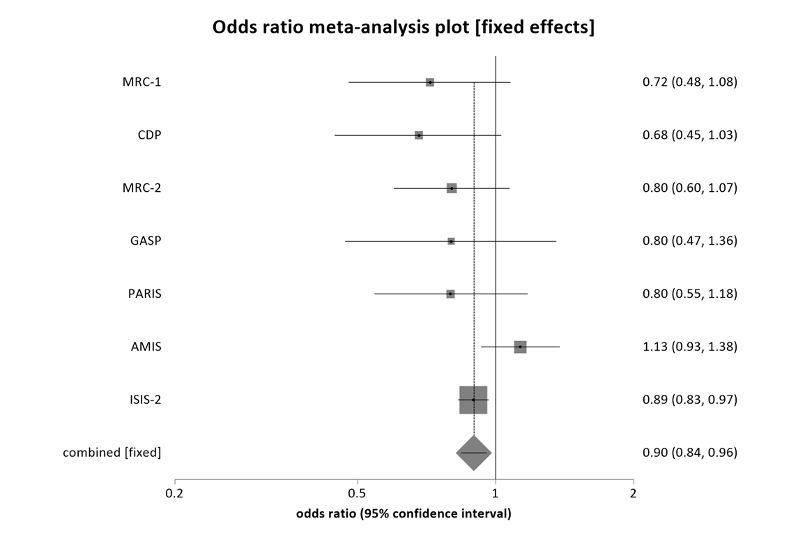
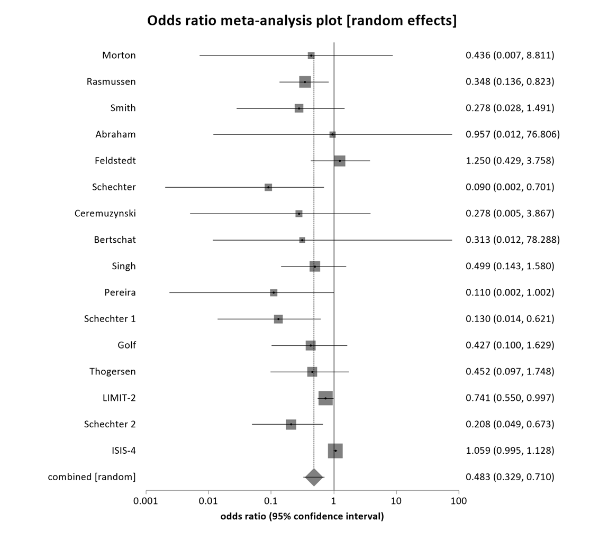

Forest (Meta-analysis) Plot
Menu location: Graphics_Forest (Cochrane).
This plots a series of lines and symbols representing a meta-analysis or overview analysis.
StatsDirect uses a line to represent the confidence interval of an effect (e.g. odds ratio) estimate. The effect estimate is marked with a grey square with a dot at its centre. The size of the square represents the weight of the corresponding study: the side of the square is proportional to the square root of the group size or weight given for that study relative to the largest.
The pooled estimate is marked with a grey diamond that has an ascending dashed line from its upper point. Confidence intervals of pooled estimates are displayed as a horizontal line through the diamond; this line might be contained within the diamond if the confidence interval is narrow. You may define more than one pooled effect estimate to represent sub-groups (use a value > 0 in the pooling indicator to do this).
To prepare a forest plot in StatsDirect you must first enter a list of effect estimates in a workbook. You must also prepare matching columns of lower and upper confidence limits. Thus we have three columns of equal length in a workbook for these data. You can also prepare a matching column of sample sizes or weights but this is optional.
A further optional column can be used to indicate which of the effect estimates and their confidence limits are pooled. A pooling indicator of 0 represents an individual study, < 0 (e.g. -1) indicates an overall pooled result (there should be only one) and > 0 (e.g. 1) indicates a pooled subgroup. If no pooling indicator variable is selected then all are assumed to be individual studies.


This plot can be put to other uses. Please note that you can annotate it using an external presentation package such as Microsoft Powerpoint. To annotate a StatsDirect graph in Microsoft Word just copy it from StatsDirect to Word using the clipboard and double click on it in Word.
Note that L'Abbé plots can be more useful that the plots above for exploring the heterogeneity of effects in a meta-analysis (Song, 1999).
Example
Test workbook (Graphics worksheet: Odds Ratio, LCI, UCI, Number, Pool, Study).
The columns hold the odds ratio of death after heart attack, with its 95% confidence limits, in each of the seven trials of aspirin given by Fleiss (1993) that the meta-analysis examples use, the number of patients in each trial and, in the last row, a pooled odds ratio for the seven trials together with its confidence interval. The pooling indicator is 0 for each trial and -1 for the pooled row.
To draw the plot in StatsDirect open the test workbook using the file open function of the file menu. Then select Forest (Cochrane) from the Graphics menu. Select the columns marked "Odds Ratio", "LCI", "UCI", "Number", "Pool" and "Study" when prompted for the summary statistic, its lower and upper confidence limits, the group size or weight, the pooling indicator and the stratum labels.
For this example:
The plot is titled "Forest plot" and its axis is labelled "Odds Ratio (95% confidence interval)"; the axis is logarithmic because the summary statistic is a ratio (a linear axis is used when the title of the statistic's column does not contain "ratio"). Each row of the columns is a row of the plot, the first at the top, with its label to the left and its estimate and confidence limits to the right, rounded to two decimal places (three or four when the smallest value is below 0.01 or 0.001):
MRC-1 0.72 (0.48, 1.08)
CDP 0.68 (0.45, 1.03)
MRC-2 0.80 (0.60, 1.07)
GASP 0.80 (0.47, 1.36)
PARIS 0.80 (0.55, 1.18)
AMIS 1.13 (0.93, 1.38)
ISIS-2 0.89 (0.83, 0.97)
Pooled 0.90 (0.84, 0.96)
The side of each trial's grey square is proportional to the square root of its weight relative to the heaviest trial, so ISIS-2 (17187 patients) has the largest square and GASP (626 patients) the smallest. The pooled row is drawn as a grey diamond with its confidence interval as a line through it and a dashed line rising from the top of the diamond to the first row. Six of the seven trials point to fewer deaths on aspirin, but only ISIS-2, the largest, has a confidence interval that excludes an odds ratio of 1; the pooled interval, 0.84 to 0.96, also excludes it.
 R code
R code
This R code reproduces the illustration above. It needs no packages and was checked with R 4.6.1. Paste it into R, or save it as a script and run it.
# Forest (Cochrane) plot: the StatsDirect help illustration (the odds ratio of death
# after heart attack in each of the seven trials of aspirin given by Fleiss (1993),
# with its 95% confidence limits and the size of the trial, and a pooled odds ratio
# for all seven; the test workbook's Graphics worksheet columns Odds Ratio, LCI, UCI,
# Number, Pool and Study) in R
study <- c("MRC-1", "CDP", "MRC-2", "GASP", "PARIS", "AMIS", "ISIS-2", "Pooled")
or <- c(0.719714, 0.68076, 0.80287, 0.800739, 0.798143, 1.132736, 0.894969, 0.896824)
lower <- c(0.47831, 0.446423, 0.599864, 0.46972, 0.545041, 0.930385, 0.828783,
0.839992)
upper <- c(1.077371, 1.030758, 1.072965, 1.358784, 1.177753, 1.37967, 0.966411,
0.957475)
number <- c(1239, 1529, 1682, 626, 1216, 4524, 17187, 28003)
pool <- c(0, 0, 0, 0, 0, 0, 0, -1) # 0 an individual study, -1 the overall pool
k <- length(or)
# Limits entered the wrong way round are swapped, as StatsDirect swaps them
lo <- pmin(lower, upper)
hi <- pmax(lower, upper)
lower <- lo
upper <- hi
# The labels StatsDirect writes to the right of each row: the estimate and its limits
# to 2 decimal places (3 or 4 when the smallest value is below 0.01 or 0.001)
label <- sprintf("%.2f (%.2f, %.2f)", or, lower, upper)
cat(paste(study, label), sep = "\n")
# Base R has no forest plot function, so the chart is drawn from its parts. The rows
# follow the order of the columns from the top down; the axis is logarithmic because
# the summary statistic is a ratio (StatsDirect chooses a log scale when the column's
# title contains "ratio", and a linear scale otherwise).
y <- rev(seq_len(k))
op <- par(mar = c(5, 5, 4, 9))
plot(or, y, type = "n", log = "x", xlim = range(lower, upper), ylim = c(0.5, k + 0.5),
yaxt = "n", ylab = "", xlab = "Odds Ratio (95% confidence interval)",
main = "Forest plot", bty = "n")
mtext(study, side = 2, at = y, las = 1, line = 0.5)
mtext(label, side = 4, at = y, las = 1, line = 0.5)
# Each study: a grey square whose side is proportional to the square root of its
# weight relative to the heaviest study (plus a small minimum), the confidence
# interval as a line through it, and a dot at the estimate
s <- pool == 0
w <- number[s] / max(number[s])
points(or[s], y[s], pch = 15, col = "grey", cex = 0.5 + 3 * sqrt(w))
segments(lower[s], y[s], upper[s], y[s])
points(or[s], y[s], pch = 16, cex = 0.5)
# The pooled estimate: a grey diamond with its confidence interval as a line through
# it and, for the overall pool (indicator below 0), a dashed line rising from the top
# of the diamond to the first row. StatsDirect draws no line of no effect unless one
# is set as a marker line in the chart options; abline(v = 1) would add it.
p <- pool != 0
points(or[p], y[p], pch = 18, col = "grey", cex = 4)
segments(lower[p], y[p], upper[p], y[p])
segments(or[pool < 0], y[pool < 0] + 0.35, or[pool < 0], k, lty = 2)
par(op)